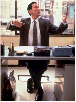
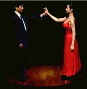
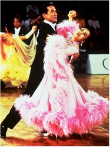
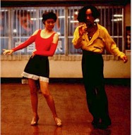

|
|
|
| Movie Credits | Buy It! |
Shall We Dance
Review by Carrie
Gorringe
Posted 18 July 1997
Written and Directed by Masayuki Suo Starring Koji Yakusho, Tamiyo Kusakari, |
Shohei Sugiyama (Yakusho) is a middle-aged businessman about to suffer that affliction common to all men of advancing age and narrowing opportunities – the mid-life crisis. The object of his crisis is Mai (Kusakari), the beautiful instructor at a dancing school. Sugiyama has seen her only from afar; his train passes the building in which the school is located every night on the way to his new house. It is the only bright beacon in a sea of grey light and grey salarymen and women that engulf his train, and like a ship seizing upon a beacon, Sugiyama sails straight for ballroom-dancing lessons and the attentions of the lovely Mai. Mai, however, is a ballroom dancer of considerable talent – she once reached the semi-finals of the World championship competition at Blackpool – and has no desire to become Sugiyama’s object of desire. She coldly informs him that she takes her dancing seriously, and the fact that he does not share the same regard for it as she does is offensive to her.
Ashamed, Sugiyama flees from his lessons, only to discover that his new hobby has become more than an excuse for a pick-up; the impulse strengthens when he discovers that one of his office colleagues, Aoki (Takenaka) has the same "affliction" as he, except that Aoki’s interest has become an obsession. A careless accountant at work, Aoki is transformed on the dance floor into "Donny Aoki", a man of flowing hair tendrils and flaming sensuality when in the grip of a rumba foot pattern, even if he resembles the Japanese equivalent of a lounge lizard. Meanwhile, Sugiyama’s wife is alarmed by her husband’s patterned absences, and engages a private detective to spy on him, afraid of an affair. Sugiyama, Mai and Aoki are dancing their way onto a path of self-revelation.
Pair dancing – make that dancing of any sort -- has always contained within it elements of the sacred and the profane, hence it has always been a problematic behavior. Although dancing has been associated with religious rituals, particularly those relating to ecstatic loss of control at the height of holy bliss, that same ecstasy has also led dancing, especially pair dancing, to be labeled "vertical foreplay", and for good reason: dancing as a couple is not only the best way to become familiar with another individual’s movements and temperament, it is also the closest form of intercourse with another, physically speaking, short of the actual sex act. Rogers and Hammerstein understood those tensions innately; the title of the song that they wrote for The King and I (which also graces this film), lays out the dilemma unambiguously within one stanza. What will happen to a couple on the dance floor when the last star has "left the sky"? (Shall we still be together// With our arms around each other // And shall you be my new romance?…). In a socially-straitened world such as Japan, where, as an unnamed narrator informs us, public embraces between married couples are perceived as indecent (familiarity presumably breeding a process of intuitive understanding instead of contempt), the deliciousness of the transgressive potential inherent in dance can only be enhanced. The poet William Blake once wrote that it was better "to murder an infant in its cradle than nurse unacted desire." Nevertheless Sugiyama, Aoki and Mai discover that their transgressions are not selfish, in the sense that they do not enrich the self at the expense of others; in pair dancing, one partner might lead, but both partners must compromise if the richness of dancing is to reach its physical and mental apogee. It’s a lesson that all have to learn.
But there is another offshoot of the sexual aspects of dancing that becomes important to the participants in Shall We Dance: dance’s ability to reaffirm life through movement. No matter how many excellent theories exist to explain the content and the structure of a musical film – such as the transformation of heterosexual desire into socially-acceptable, permanent pair bonds and the gradual inclusion of the loner within society – their quasi-sociological assumptions tend to forego the simple delight of movement itself. While watching the amateur dancers gradually reconnect with their bodies, I was reminded of the "Broadway Melody" sequence from the Gene Kelly-Stanley Donen musical, Singin’ In the Rain. The pretext for this sequence is to recount the stresses and strains associated with attaining fame, with the expression, "Gotta Dance!" thrown out by Kelly at every juncture along the way as a justification for his hoofing as if movement alone were a justification for earning a living. Many doors are slammed in his face, but he is undaunted: the gesture is trademark Kelly, with his arms and chest thrown back, his face animated by an almost holy joy, underscoring the legitimacy of his own existence through dance. This is what Sugiyama will discover as he learns how to move within strictly-set patterns: within those patterns there is boundless room for self-expression. Prior to taking up dancing, all Sugiyama could see in his life were boundaries, from his marriage to the thankless, routine commute that surrounded him in a world of greyness. He is disheartened to find more patterns that he must learn, but his mid-life crisis becomes the impetus to master dance. In the end, however, dance masters him and he is a better person for it. He learns not only compromise, but also of the potential for freedom within self-control; that potential , and not sexuality, is the most subversive element of dance.
It is a revelation delivered without irony and with a considerable elegance by the lead actors. Yashuko’s face, expressively forlorn in the early sequences, embodies a life of thwarted expectations. This face, transformed into a specter of calm joy, becomes its own beacon of hope. Kusakari is sweet and tough; she is like a race horse that has temporarily lost the urge to compete, but never the hope of winning. Takenaka, hilarious in his assumption of his "Donny Aoki" alter ego, provides a delightful counterpoint to all of the seriousness surrounding him. Donny is a shameless scene-stealer, but the theft takes place to his own eventual benefit. Shall We Dance is also shameless – shamelessly soft-hearted and romantic, and a wonderful mid-summer tonic -- sublimated heat being so much more interesting than the humidity-inspired mess waiting just outside the door.
Contents | Features | Reviews | Books | Archives | Store
Copyright © 1999 by Nitrate Productions, Inc. All Rights Reserved.